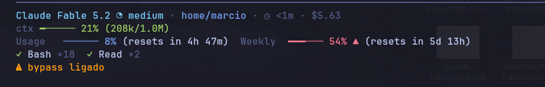

Status line — variantes “Calmo”
Quatro desenhos para a mesma informação da sua tela atual. Tudo aqui é mock em HTML com os seus números reais, nas cores do Tokyo Night; nada foi aplicado.
Hoje
Captura real que você mandou
- 5 linhas e 6 cores em estado normal. Ciano, verde e azul não avisam nada: só diferenciam linhas.
- Três medidores, três desenhos. Rótulos
ctx, Usage, Weekly (caixa e idioma diferentes), barras de tamanhos diferentes, nada alinhado em coluna.
- Detalhe sempre aberto.
(208k/1.0M) e (resets in 4h 47m) ocupam espaço mesmo com 8% de uso.
- O único alerta real se perde. O
▲ da semana (ritmo acima do esperado) é o dado mais importante da tela e não diz o que significa.
✓ Bash ×18 é histórico, não estado. Parado, não ajuda a decidir nada.
As regras das variantes
- Responder três perguntas, nesta ordem: onde estou (modelo, raciocínio, pasta) · quanto me resta (contexto, 5h, semana) · quanto gastei (tempo, custo).
- Normal é monocromático. Barra e número no texto claro e no cinza-azulado do Tokyo Night. Laranja a partir de 70% ou ritmo alto, vermelho a partir de 85%. Cor passa a ser sempre notícia.
- Um vocabulário:
ctx, 5h, semana, renova em. Mesma barra de 8 células para os três.
- Detalhe só quando importa. Tempo de renovação e números absolutos aparecem no alerta ou no nível detalhado.
- O ▲ ganha tradução: quando o ritmo estoura, a linha diz em quanto tempo o limite acaba.
B+ · a escolhida, com as informações a mais
É a variante B que você marcou, com o que faltava. Continua com duas linhas no estado normal; a terceira só existe quando há aviso.
Normal, dentro de um repositório, com subagentes rodando
{b:Fable 5.2} {s:· medium · pi-harness ⎇ main*}>>{s:2 agentes · 12m · $1.08}
{s:ctx} ━{t:━━━━━━━} 9% {s:5h} ━{t:━━━━━━━} 8% {s:semana} ━━{t:━━━━━━} 22%
Seu estado da captura (fora de repositório, semana em ritmo alto)
{b:Fable 5.2} {s:· medium · ~}>>{s:<1m · $5.63}
{s:ctx} ━━{t:━━━━━━} 21% {s:5h} ━{t:━━━━━━━} 8% {s:semana} {w:━━━━}{t:━━━━} {w:54% ▲} {s:nesse ritmo acaba em 1d 6h}
{w:⚠ bypass ligado}
Pior caso: tudo que pode dar aviso, ao mesmo tempo
{b:Fable 5.2} {s:· medium · pi-harness ⎇ main*}>>{s:2h 14m · $41.20}
{s:ctx} {w:━━━━━━━}{t:━} {w:88%} {s:compacta em breve} {s:5h} {e:━━━━━━━━} {e:93%} {s:renova em 22m} {s:semana} ━━━━━{t:━━━} 61%
{w:⚠ cache 31%} {e:✗ MCP linear fora do ar} {w:⚠ bypass ligado}
Limites sem atualizar: barras apagadas e a idade do dado, em vez de um número que parece atual
{b:Fable 5.2} {s:· medium · pi-harness ⎇ main}>>{s:47m · $9.12}
{s:ctx} ━━━{t:━━━━━} 34% {s:5h} {t:━━━━━━━━} {s:8%} {s:semana} {t:━━━━━━━━} {s:22%} {s:limites de 40m atrás}
Nível detalhado (abre sob demanda)
{b:Fable 5.2} {s:· medium · pi-harness ⎇ main*}>>{s:2h 14m · $41.20}
{s:Contexto} ━━━{t:━━━━━━━━━} 21% {s:208k de 1.0M}
{s:Sessão 5h} ━{t:━━━━━━━━━━━} 8% {s:renova em 4h 47m}
{s:Semana} {w:━━━━━━}{t:━━━━━━} {w:54% ▲} {s:renova em 5d 13h · nesse ritmo acaba em 1d 6h}
{s:Cache} ━━━━━━━━━━━{t:━} 92% {s:lido do cache no último turno}
{s:Tokens} {s:entrada 1.2M · saída 48k}
{s:Alterações} {g:+142} {e:−38} {s:linhas · 6 arquivos}
{s:Atividade} {s:Bash 18 · Read 2 · 2 agentes}
{s:Sessão} {s:redesenho da status line · $18.40 por hora}
| Informação | Onde aparece | Quando | O dado existe hoje? |
|---|
Branch e sujo (*) | linha 1, depois da pasta | sempre que for repositório | pasta e worktree chegam ao HUD; a branch o claude-hud lê do git |
| Agentes ativos | linha 1, à direita | só com agente rodando | o painel de subagentes tem a contagem; hoje não é repassada ao status |
| Compactação chegando | ao lado do ctx | perto do limite de compactação | o uso do contexto existe; o limite configurado precisa ser lido |
| Cache ruim | linha de avisos | abaixo de um piso (proposta: 50%) | tokens lidos e gravados em cache já vão no payload |
| MCP fora do ar | linha de avisos | só na falha | não verificado |
| Limites velhos | barras apagadas + idade | dado com mais de alguns minutos | o cache de uso guarda o horário da leitura |
| Tokens, linhas alteradas, nome da sessão, custo por hora | nível detalhado | sob demanda | tokens, linhas e nome da sessão já vão no payload; custo por hora é conta |
O piso de 50% para o cache e o prazo para considerar os limites velhos são proposta minha. “MCP linear” e os números do nível detalhado são exemplos.
Variantes
A · Uma linha mais compacta
Seu estado atual (semana em ritmo alto)
{b:Fable 5.2} {s:· medium · ~}>>{s:ctx 21% 5h 8%} {w:semana 54% ▲} {s:<1m $5.63}
{w:⚠ bypass ligado}
Perto dos limites
{b:Fable 5.2} {s:· medium · pi-harness}>>{w:ctx 88%} {e:5h 93% · renova em 22m} {s:semana 61% 2h 14m $41.20}
{w:⚠ bypass ligado}
Sem barras: só número. Lê-se num relance e sobra uma linha só. Perde a noção visual de “quanto falta”.
B · Medidores recomendada como padrão
Seu estado atual
{b:Fable 5.2} {s:· medium · ~}>>{s:<1m · $5.63}
{s:ctx} ━━{t:━━━━━━} 21% {s:5h} ━{t:━━━━━━━} 8% {s:semana} {w:━━━━}{t:━━━━} {w:54% ▲} {s:nesse ritmo acaba em 1d 6h}
{w:⚠ bypass ligado}
Tudo normal
{b:Fable 5.2} {s:· medium · ~}>>{s:12m · $1.08}
{s:ctx} ━{t:━━━━━━━} 9% {s:5h} ━{t:━━━━━━━} 8% {s:semana} ━━{t:━━━━━━} 22%
Perto dos limites
{b:Fable 5.2} {s:· medium · ~/code/pi-harness}>>{s:2h 14m · $41.20}
{s:ctx} {w:━━━━━━━}{t:━} {w:88%} {s:5h} {e:━━━━━━━━} {e:93%} {s:renova em 22m} {s:semana} ━━━━━{t:━━━} 61%
{w:⚠ bypass ligado}
Duas linhas: identidade em cima, os três medidores iguais embaixo. Tempo e custo vão para a direita, discretos. Os contadores de tools saem (ficam no nível detalhado).
C · Painel nível detalhado
Seu estado atual
{b:Fable 5.2} {s:· medium · ~}>>{s:<1m · $5.63}
{s:Contexto} ━━{t:━━━━━━━━━━} 21% {s:208k de 1.0M}
{s:Sessão 5h} ━{t:━━━━━━━━━━━} 8% {s:renova em 4h 47m}
{s:Semana} {w:━━━━━━}{t:━━━━━━} {w:54% ▲} {s:renova em 5d 13h · nesse ritmo acaba em 1d 6h}
{s:Atividade} {s:Bash 18 · Read 2}
{w:⚠ bypass ligado}
É o conteúdo de hoje, alinhado em colunas (rótulo, barra, número, detalhe) e em português. Bom para consultar, pesado para ficar sempre aberto.
D · Só exceções nível mínimo
Tudo normal
{b:Fable 5.2} {s:· medium · ~}>>{s:12m · $1.08}
Seu estado atual
{b:Fable 5.2} {s:· medium · ~}>>{w:semana 54% ▲ acaba em 1d 6h} {s:<1m · $5.63}
{w:⚠ bypass ligado}
Perto dos limites
{b:Fable 5.2} {s:· medium · ~/code/pi-harness}>>{e:5h 93% · renova em 22m} {w:ctx 88%} {s:2h 14m · $41.20}
{w:⚠ bypass ligado}
Medidor só aparece quando passa de 70% ou o ritmo estoura. É o mais “Apple”, mas você deixa de ver o contexto subindo aos poucos.
Gerenciamento: um sistema, três níveis
Em vez de escolher uma variante para sempre, a recomendação é tratar D, B e C como três níveis de densidade da mesma status line.
| Nível | Desenho | Linhas | Como chega |
|---|
| Mínimo | D · só exceções | 1 | etiqueta ▸ STATUS LINE recolhida (hoje recolhida não mostra nada) |
| Padrão | B · medidores | 2 | etiqueta ▾ STATUS LINE aberta |
| Detalhe | C · painel | 5 | segundo clique ou → com a seção em foco; volta sozinho ao enviar o próximo prompt |
- Alerta fura o nível. Laranja e vermelho aparecem em qualquer nível, inclusive no mínimo.
- Um comando,
/statusline, para escolher nível padrão, itens (custo, tempo, atividade, git) e limiares. Hoje isso é o /claude-hud-configure, com nomes do plugin.
- Estreito: some primeiro o detalhe, depois as barras (fica o número), depois tempo e custo. Modelo e alertas ficam por último.
- Sem cor: o alerta continua legível pelo
▲ e pelo texto “acaba em…”.
Em aberto
- Limiares: 70% (atenção) e 85% (crítico) são os padrões do próprio claude-hud para o contexto (
contextWarningThreshold, contextCriticalThreshold); usei os mesmos nos três medidores. Não achei norma externa para esses números.
- O “acaba em 1d 6h” é conta com os seus números (54% usados em 1d 11h de 7d). Falta confirmar no código se o HUD entrega a projeção ou só o
▲.
- Alternativa ao texto de ritmo: um marcador na barra mostrando quanto da janela já passou (o ccstatusline chama de “time cursor”). Mais compacto, menos óbvio.
- As cores de hoje vêm do próprio claude-hud, não do tema do pi. Aplicar exige recolorir as linhas na camada que já as reorganiza (patch do pi-code).
- A etiqueta
STATUS LINE e a linha de bypass ficam como estão em todas as variantes.
Fontes lidas
- Apple HIG · Gauges: rótulos curtos para o valor atual; mudar a cor do preenchimento quando o valor chega a níveis significativos.
- Apple HIG · Widgets: equilibrar a densidade (“overly dense layouts are less glanceable”); mostrar só o que serve ao propósito principal.
- Claude Code · status line: campos de contexto, limites de 5h e 7d com horário de renovação, custo e esforço; limites podem não vir.
- claude-hud: duas linhas por padrão; tools, agentes e todos são linhas opcionais; contexto verde, amarelo, vermelho; limiares em
src/config.ts.
- ccstatusline: configuração por TUI; ocultar itens por condição; trocar porcentagem pela contagem do reset perto do limite; “time cursor”.
- Codex CLI · status_line_setup.rs: lista ordenada de itens; itens somem quando não há dado.
- Starship: “as minimal or feature-rich as you'd like it to be”.
Não verificado em fonte primária: estudos sobre barra contra número puro, projeção de esgotamento (“burn rate”) e o comportamento exato do usagePace do claude-hud.